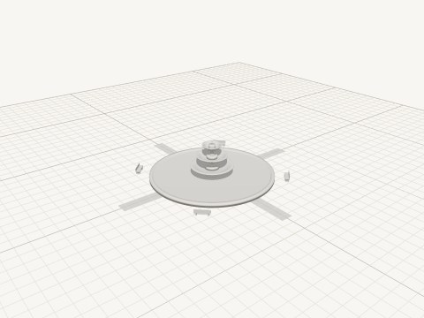
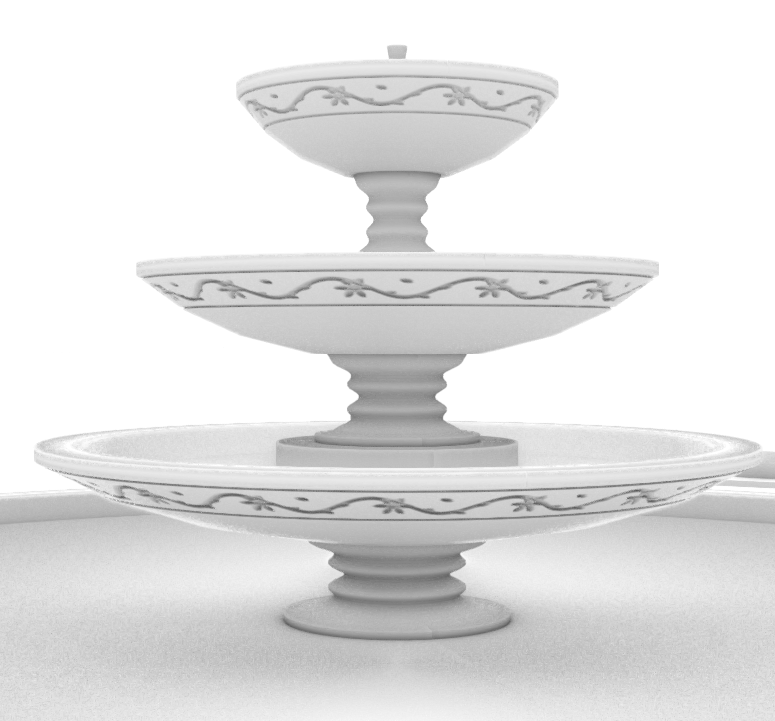
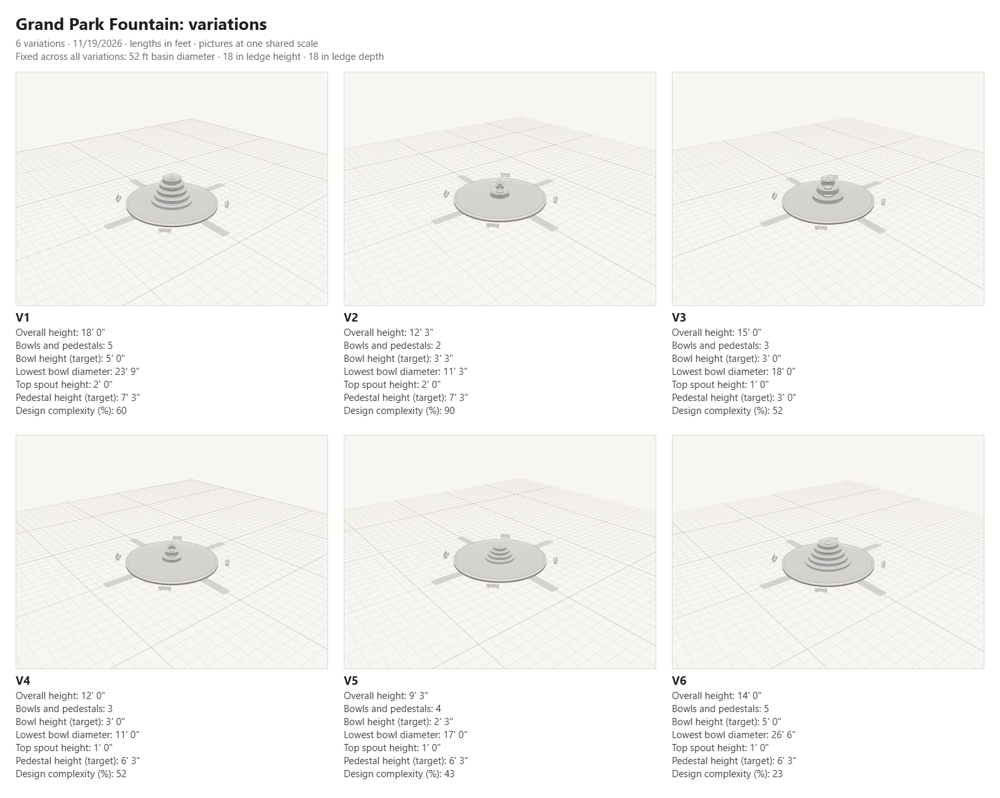

ARC 585 · Human Centered AI for All · Fall 2026
Grand Park Fountain
This Capstone Project is a tool I coded for my ARC 585 class based on the Master Plan project for ARC 101. The plan I created featured a large fountain in the center of the Grand Park, but it took me a while to figure out how I wanted the fountain to look. Thus, I created this tool to help me design a fountain that looked visually appealing while fitting in with its surroundings. I chose this particular variation because I felt as though the complexity of the fountain and the number of bowls were visually coherent with the complexity of the surroundings—namely, the pillars of the arcaded buildings. The more complex variations with more bowls and pedestals oversaturated the site with small detail in dense clusters. The park is large, and the pillars and the fountain are so small in comparison. I strived for balance between the detail of these small areas and the large, more barren park. Variation 3, a taller, elegant fountain with adequate detail achieves this vision.
Fountain generator
Open the full toolChosen design · Variation 3


Design variations
